视频
线性代数
向量
二维
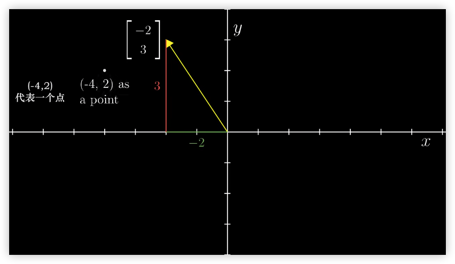
三维
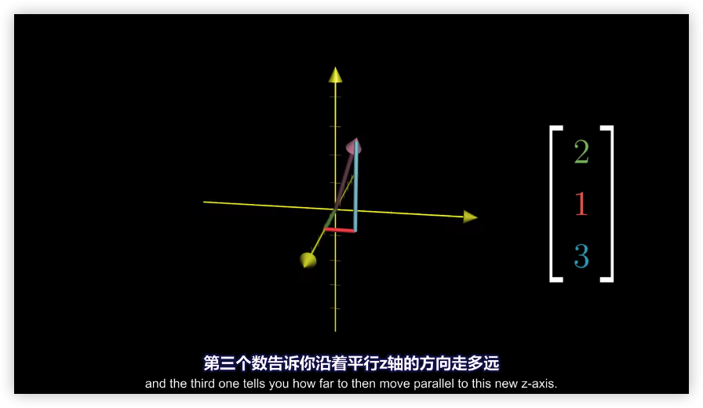
向量加法
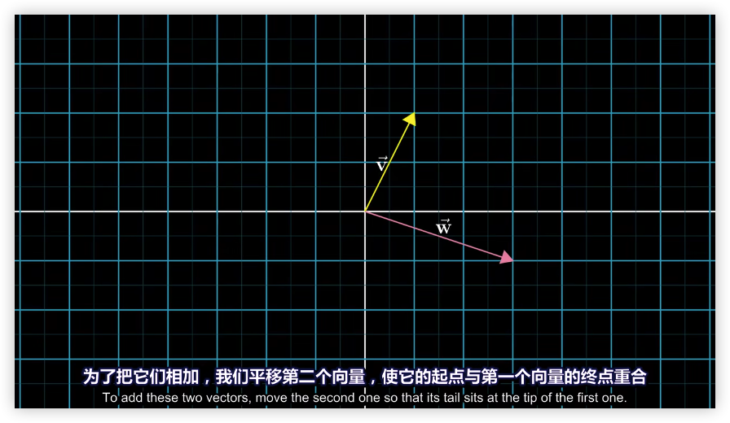
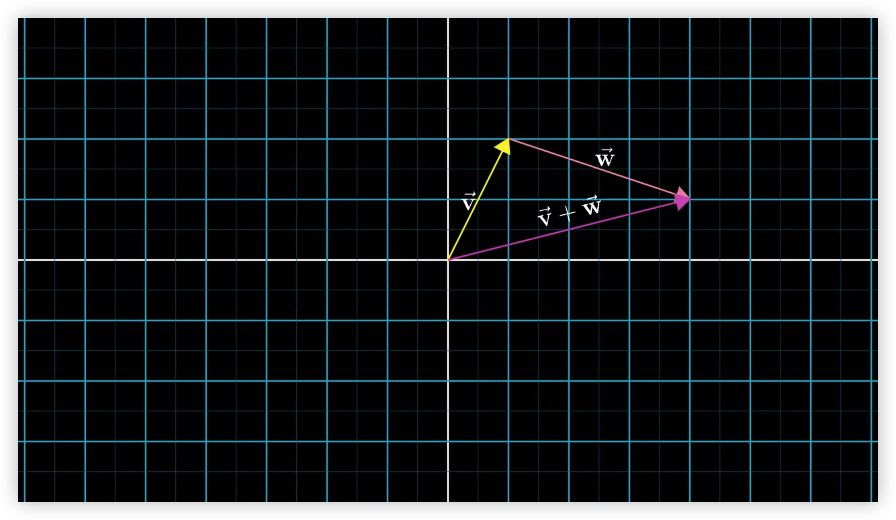
向量乘法
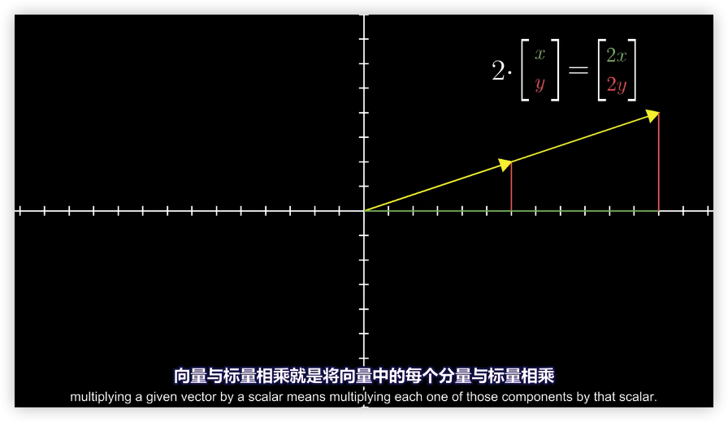
线性组合、张成的空间与基
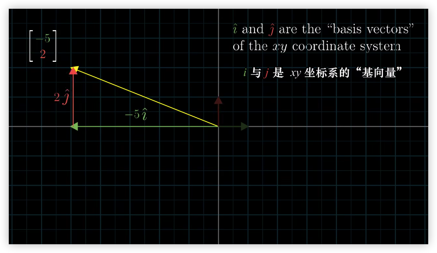
张成的空间
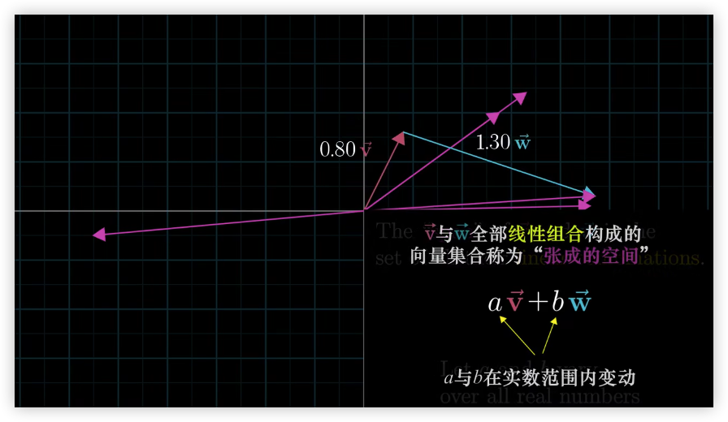
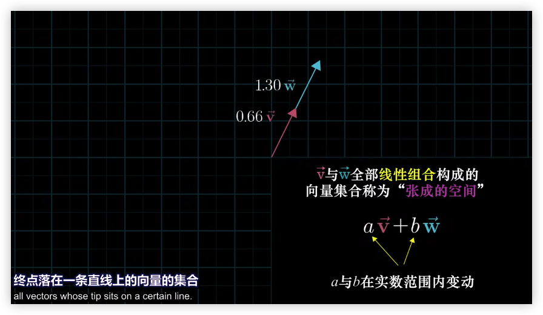
`
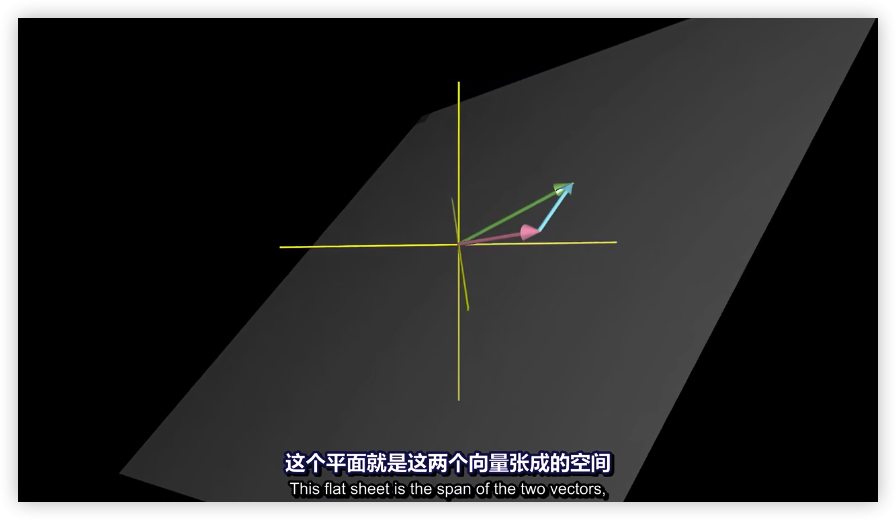
线性变换

数学表示线性变换位置

矩阵
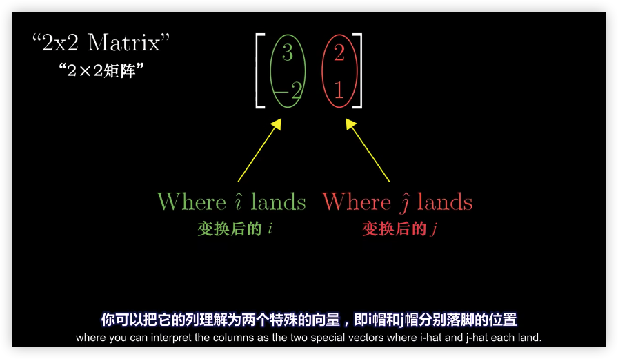
矩阵乘法
复合变换

和复合函数的记号一样比如f(g(x)) 是先计算g(x)然后才是f(x)
矩阵 * 矩阵
1️⃣
2️⃣
3️⃣
4️⃣
只有在第一个矩阵的列数等于第二个矩阵的行数时，两个矩阵才能相乘
行列式
拉伸空间
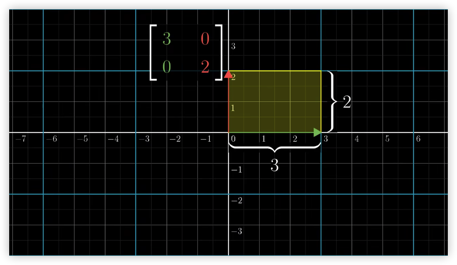
挤压空间


空间反转

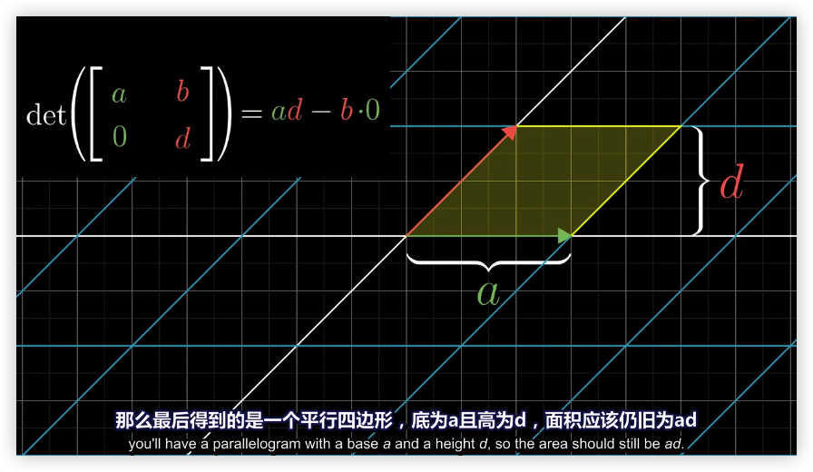
三维空间面积线性变换

线性方程组
A 的逆变换：
恒等变换：
线性变换 A 没有压缩空间纬度（行列式不为 0），则它存在逆变换
不存在逆变换时。将空间变换压缩为一条直线，向量 v 恰好落与该直线，则该解存在
秩(Rank)